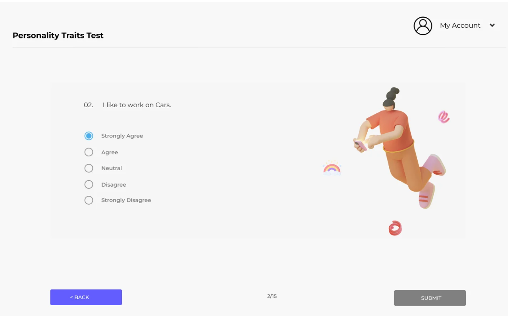
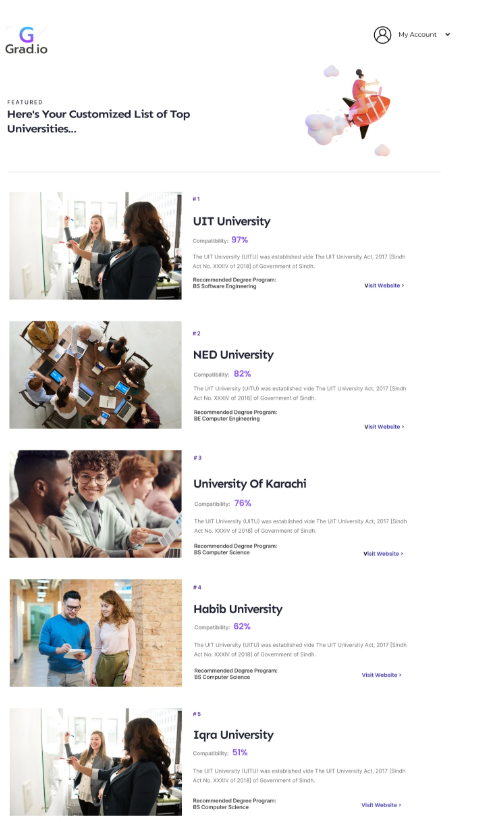
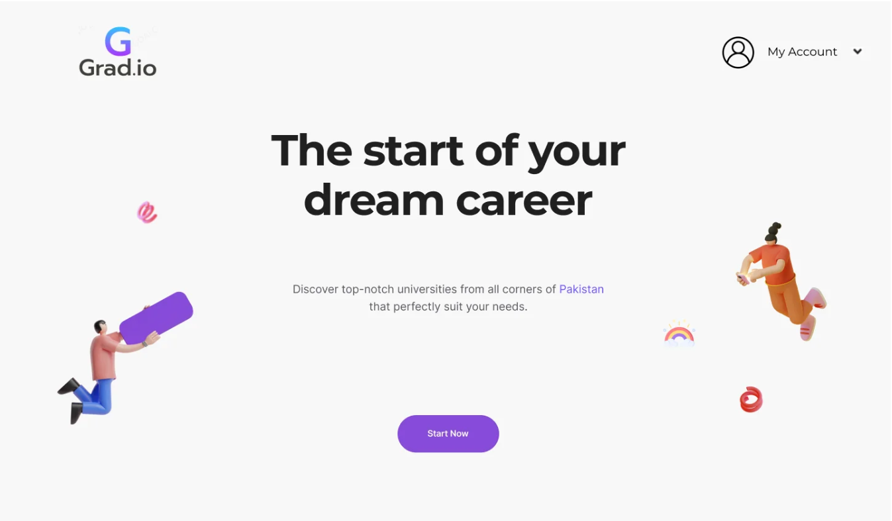
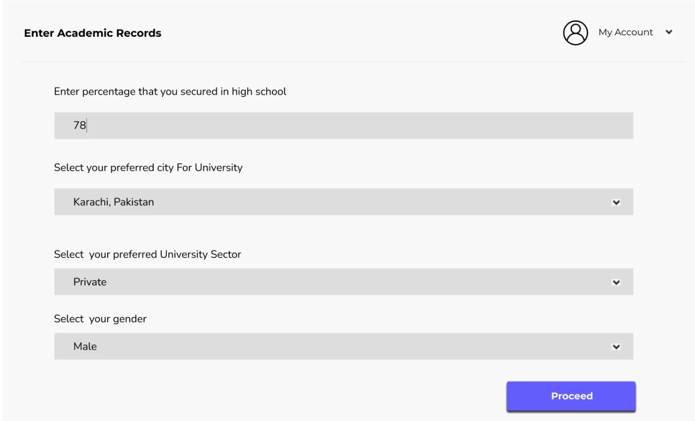

Final Year Project: Grad.io – University Recommendation System
Project Description
Grad.io is an innovative university recommendation system designed to align students’ academic paths with
their unique personalities, interests, and career aspirations. The system assesses user personalities
through the RIASEC personality test & user’s text-based input for their interests. Utilizing a
comprehensive dataset gathered from various university websites via web scraping, Grad.io provides
tailored recommendations for academic programs according to their academic grades.
Key Responsibilities
- Team Leadership: Led a team of 4 in developing Grad.io, a platform that assists
students in selecting universities and degree programs based on their grades, preferences, and
interests.
- Backend Development: Designed and developed Backend APIs, incorporating RESTful
architecture, to process & handle the scrapped data of universities, user’s academic grades, RIASEC
Personality assessment results & user interests.
- Personality Assessment Implementation: Implemented the RIASEC model for personality
assessment, using Cosine similarity & Sentence Transformer to match students’ interests and
personalities with suitable university programs.
- Natural Language Processing: Utilized NLP libraries along with Porter Stemmer and
word lemmatization for preprocessing user interests.
- Security: Implemented authentication and tokenization to ensure secure access to
the system.
- Model Optimization: Optimized the model to increase the accuracy of university
program recommendations by 30%.
- Web Scraping: Implemented web scraping using Selenium to gather data from around
200 leading universities in Pakistan. Ensured the data was up-to-date and accurate for reliable
recommendations.
Technologies Used
- Frontend: React.js
- Backend: Node.js
- Database: MySQL
- Web Scraping: Beautiful Soup, Selenium
- Model Training: Flask, NLTK, scikit-learn
- Deployment: Heroku & Digital Ocean
Challenges Faced
- Ensuring accurate and up-to-date data collection from university websites.
- Balancing multiple factors such as academic records, personality traits, and interests to provide
reliable and relevant recommendations.
- Designing an intuitive and user-friendly interface for diverse user inputs.
Results Achieved
Successfully developed a fully functional university recommendation system that provides personalized
university recommendations based on academic records, personality traits, and interests. Received
positive feedback from users for the system’s accuracy and relevance in university recommendations.
Key Features
- User registration and authentication
- Academic input and preferences
- RIASEC personality tests and personalized recommendations
- User’s text-based input for Interests
- Scrapped data from 200 universities in Pakistan
- User-friendly interface and responsive design
- Algorithms for accurate recommendations
Conclusion and Future Work
Grad.io aims to simplify the decision-making process for students, helping them identify the best
educational opportunities that align with their individual profiles and goals. Future work includes
expanding the dataset to include more universities, enhancing the recommendation algorithms, and
incorporating more advanced AI and ML techniques for even more accurate recommendations.
Screenshots/Demo



